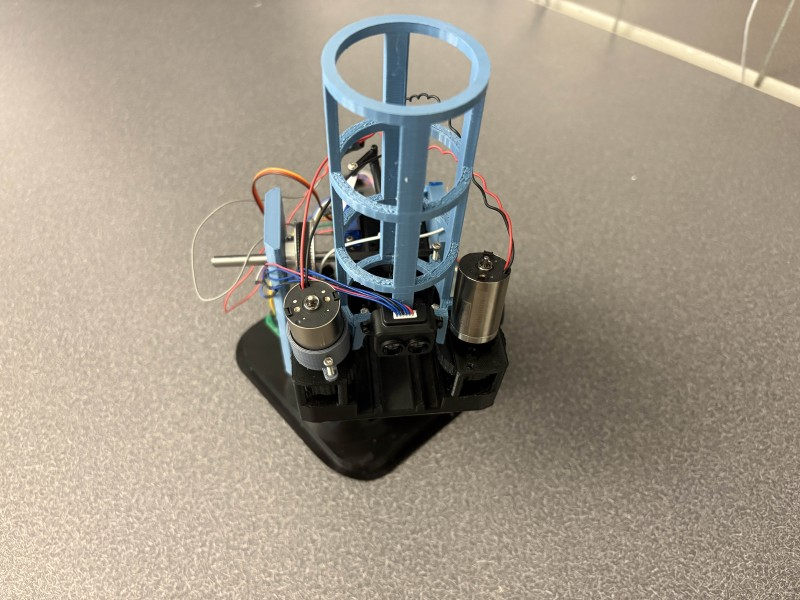

Introduction
This documentation provides a comprehensive overview of the firmware of the Automated Ping Pong Launcher Robot which is powered by an STM32F4111 microcontroller and a custom PCB. The robot is designed for both manual and automatic operation, utilizing various motors and sensors to achieve ball launching and positioning.

Ping Pong Ball Launcher
The robot features:
- Two 12V DC-gearmotors with built in encoders for accurate positioning of the robot base.
- Two flywheel motors for launching ping pong balls.
- TF Luna LIDAR sensor for distance measurement and object detection.
- A BNO055 Inertial Measurement Unit (IMU) for orientation and heading information.
Key Features and Control Modes
The robot operates under four distinct control modes, each designed for different operational scenarios:
- S1: Idle Mode (FSM::S1_IDLE) The initial state where the robot is awaiting commands. From this mode, you can transition to other operational modes. Commands:
- 'MODEX' : Changes to different Mode / State where 'X' is the number of the mode.
- S2: Manual Step Input Mode (FSM::S2_MANUAL_STEP_INPUT) Allows for granular, step-by-step control of the robot's movement using simple character inputs via UART. Commands:
- 'A': Move Left
- 'D': Move Right
- 'S': Stop Movement
- 'Q': Launch a ball
- 'E': Reset launch mechanism
- 'R': Toggle flywheel motors
- 'H': Set current IMU heading as home
- 'T': Exit to Idle Mode
- S3: Manual Target Mode (FSM::S3_MANUAL_TARGET) Enables setting specific position targets for the robot's base and controlling individual motor/servo duties.
- FXXXX: Set target position for Pololu motor 1 (e.g., F1500 for position 1500).
- M1FF: Set duty cycle for Motor 1 (flywheel). FF is a hex value for duty (-100 to 100).
- M2FF: Set duty cycle for Motor 2 (base). FF is a hex value for duty (-100 to 100).
- S1FF: Set duty cycle for Servo 1 (launch angle). FF is a hex value for duty (-100 to 100).
- Q: Launch a ball
- E: Reset launch mechanism
- R: Turn Flywheels On
- F: Turn Flywheels Off
- T: Exit to Idle Mode
- S4: Automatic Mode (FSM::S4_AUTOMATIC) The robot autonomously uses sensor data (primarily LIDAR) to detect and target ping pong balls for launching. The main.c currently indicates that pressing 'Q' is needed to start in this mode.
Hardware Components
- STM32F411 Microcontroller: The main processing unit.
- Geared Motors (Pololu Motors): Used for horizontal positioning of the robot. Controlled via PWM and encoders for feedback.
- Flywheel Motors: Responsible for imparting velocity to the ping pong ball.
- Servo Motor: Controls the launch angle or a similar mechanism.
- LIDAR Sensor (TFLuna): Connected via I2C2, provides distance and intensity data for target detection.
- IMU Sensor (BNO055): Connected via I2C3, provides orientation data (heading, pitch, roll).
- Launcher: 3D Printed parts
Custom PCB
Our Custom PCB features:
- STM32F411CEU6 microcontroller
- 4 x DRV8251 Motor Drivers
- 12V, 5V, and 3.3V rails using a LM22678TJ-ADJ switching regulator and a LMS1587ISX-ADJ-NOPB linear dropout regulator.
- The PCB is powered by a 12V 15A power adapter connected via barrel jack.
- 16 MHz crystal external clock
- UART and SWD to connect to the ST-Link.
- Two I2C lines to communicate with various peripherals.
Software Modules
Overview:
- The code attempts to implement separation of concerns. A main.cpp program is used as the entry point of the program. Multiple functions are defined in main.cpp, each called approx every 50ms and each one responsible for integrating with a specific driver.
- This approach worked best in the case of the DC motor drivers and servo drivers, as only the motor_dual and motor_t objects needed to be passed between main.cpp and motor_driver.c.
- In the case of UART and LIDAR communication, the functionality we wanted was too simple to warrant writing an external driver file. Although, in a project where hardware might change, best practice would have been to separate driver files for these too.
- Separating finite state machine (FSM) logic into FSM.cpp did not work well for us. We found that a lot of FSM logic required access to IMU, encoder, or LIDAR data. This meant we had to expose these variables via the extern keyword. This solution felt clunky and really defeated the purpose of having a separate file. FSM probably should have remained in main.cpp.
The firmware is structured into several modules:
- main.c: The entry point of the program, handles peripheral initialization, main loop execution, and UART command parsing. The main loop calls multiple smaller functions which connect with motor and IMU drivers. It also includes multiple functions meant to assist with debugging, which were heavily utilized.
- fsm.h/fsm.cpp: Implements the Finite State Machine that manages the robot's control modes. Is controlled by the set_state() function, called in main.cpp.
- motor_driver.h/motor_driver.cpp: Provides abstractions for controlling the gearmotors and flywheel motors, including PI control for positioning.
- servo_driver.h/servo_driver.cpp: Provides functions for controlling the servo motor.
- bno055.h/bno055_hal.h: Drivers for interfacing with the BNO055 IMU sensor. BNO055 files are provided by Bosch. They connect to the HAL layer via the bno055_hal files.
Performance
The overall performance of the robot aligned with our expectations, especially considering the time constraints. While the system was able to reliably launch ping pong balls, achieving precise targeting remained a challenge. This inconsistency can be attributed to limitations in the launching mechanism and the absence of a vertical gearmotor. Due to hardware issues encountered during PCB debugging and rework, two of our motor drivers became non-functional. As a result, we prioritized horizontal positioning and flywheel control, deeming the vertical gearmotor the least critical. With access to a third functional motor driver, more accurate targeting through vertical adjustment would have been feasible.
Features and Objectives
At the beginning of the project, we identified several key features and objectives for the robot's functionality:
- Utilize the LIDAR sensor to detect the presence of a plastic cup.
- Use the IMU for a homing mechanism.
- Enable manual positioning of the robot using keyboard inputs (e.g., 'A' and 'D' keys).
- Implement a mechanism for reliably launching a ping pong ball toward the target.
Challenges and Workarounds
One significant challenge we faced was that we were initially unable to drive the motors using the pinouts. We spent several days debugging the motor drivers because we were unsure why our motors did not spin. We initially thought that the issue was that our motor drivers were broken because the schematic was correct according to the DRV8251 datasheet. We then were able to spin the motors by applying a PWM signal to one of the leads of the motor and grounding the other, but we were unable to spin the motor if both OUT1 and OUT2 pins were connected to the motor driver. We then realized that the issue was related to the current draw of the motor because the motor driver disabled if the motor was connected to both OUT1 / OUT2 pins. We then discovered that the shunt resistor was 200 Ohms instead of 0.2 Ohms, which effectively resulted in a trip current threshold of ~0.001 A. We then removed the resistors and soldered the pads together with lead, which resulted in a resistance of ~0.3 Ohms and an acceptable current threshold.
Because two of our four motor drivers were rendered non-functional, we needed to find new pins capable of PWM to control our motors. We ultimately chose to drive both of our flywheels from one motor driver, allowing the remaining functioning driver to control the heading motor.
Early on we decided to utilize Bosch's official BNO055 driver, which they provide via Github. This proved challenging to integrate with our code as the architecture of the driver was more complex than anything we had encountered in class. While very capable, the driver ended up being much more than we needed for this project. It is unclear if utilizing the Bosch driver was better than writing our own.
Mistakes and Future Improvements
- Check the correct values for components on the order form.
- Use Polygons for output pins on a motor driver in addition to the Vm pin.
- Make PCB larger to make reworking easier.
- Try not to place vias close to other pins/traces.
- Add all possible pins on the microcontroller for flexibility.
- Use connectors instead of dupont wires.
Setup and Build
For detailed instructions on setting up the development environment, flashing the firmware, and building the project, please refer to the project's README.md or specific build documentation.
Project File Structure
* .
* ├── Core
* │ ├── Inc
* │ │ ├── main.h
* │ │ └── stm32f4xx_hal_conf.h
* │ └── Src
* │ ├── main.c
* │ ├── stm32f4xx_hal_msp.c
* │ └── stm32f4xx_it.c
* ├── Drivers
* │ ├── BNO055
* │ │ ├── bno055.h
* │ │ └── bno055_hal.h
* │ └── ... (Other peripheral drivers)
* ├── custom_drivers
* │ ├── fsm.h
* │ ├── fsm.cpp
* │ ├── motor_driver.h
* │ ├── motor_driver.cpp
* │ ├── servo_driver.h
* │ └── servo_driver.cpp
* └── Doxyfile (Your Doxygen configuration file)
*
Quick Links
 1.14.0
1.14.0